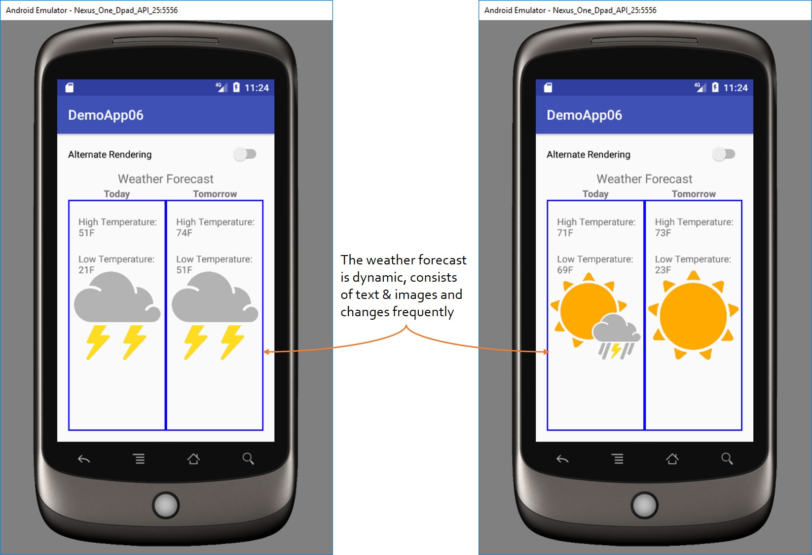

Introduction
This activity is a slightly more advanced version of the Speech-based accessibility (simple) activity. In this activity, the 'contentDescription' property of the user interface (UI) elements will be set using code. Additionally, the 'accessibilityLiveRegion' property of a view is utilized to automatically provide updates to the user when the view changes.
In this activity, a fake weather forecast for two days (today & tomorrow) is shown on the screen. As shown in the below image, the weather forecast is randomly generated and includes high & low temperature and a picture. Since the forecast is randomly generated, it's not feasible to hardcode the 'contentDescription' values in the layout XML. Hence, the value for the 'contentDescription' is assigned at runtime to the UI elements. Further, to demonstrate the 'accessibilityLiveRegion' feature, the forecast auto regenerates every 30 seconds. When it regenerates, the app will automatically announce/speak the updated forecast.

Activity
Download the activity here.
The non-accessible version of this app is located here.
The accessible version of this app is located here.
More Resources